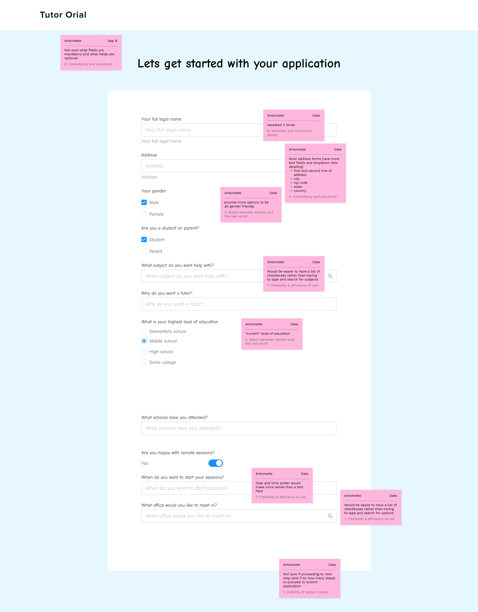
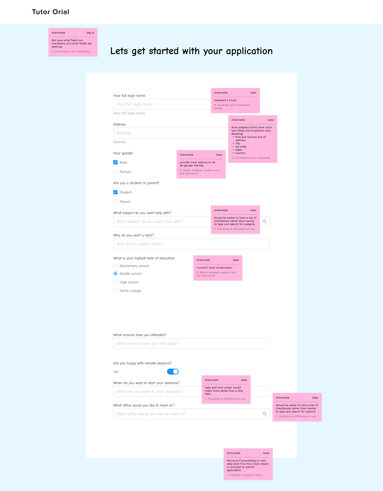

Study Buds is an online tutorial service for young college students, which was facing a high abandonment rate during the sign-up process. We identify the causes through heuristic analysis, and improve overall user engagement by redesigning the UX flow and incorporating a reimagined visual identity.
 

Original landing screen and input form, with notes from heuristic evaluation identifying problem areas
Ideating solutions – hypothesized that simplifying the question form and customizing search results for students looking for tutors online will be a more efficient and enjoyable experience.
Sign up prompt after completing quick form or questionnaire, with option to skip
Search results from user input into quick form or questionnaire

Payment options
Scheduling confirmation page

Brand System UI Style Tile